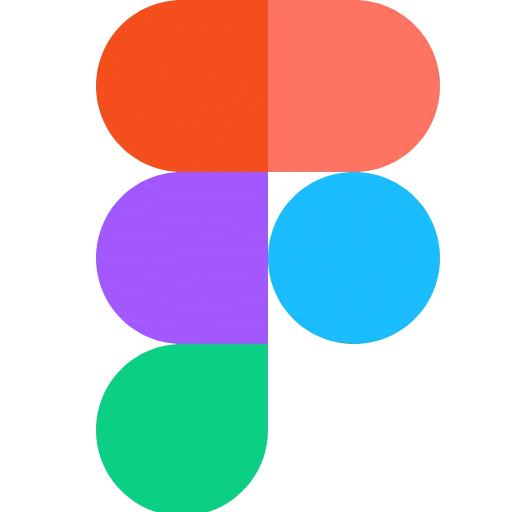

My Tech Stack
Technologies I’ve been working with recently:


Currently Learning
Technologies I’m currently diving into:
Technologies I’ve been working with recently:

Technologies I’m currently diving into: